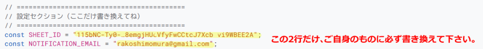
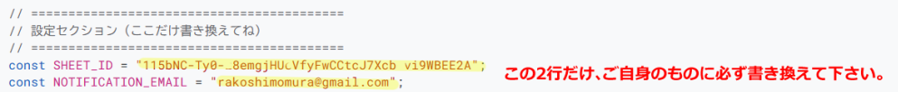

~pamoka~ DMM英会話 予約通知ツール（非公式）
pamokaは、DMM英会話の講師ページを定期チェックして「予約可」が増えたときに通知する、個人開発の無料サポートツールです（非公式）。登録したアドレスに通知メールが届きます。
このチュートリアルでは、GoogleのGAS(Google Apps Script)の設定方法を紹介します

1. スプレッドシートを準備する
まずは、データを記録する「台帳」を作ります。
【スプレッドシートの開き方】
Googleの画面右上にある「点々のマーク」から、緑色の「スプレッドシート」を選んでね。

開いたら「空白（＋マーク）」を押して新しいシートを作ります。

※シートには何も書かなくて大丈夫。
2. スプレッドシートIDをメモする
プログラムを動かすために、このシートの「住所（ID）」が必要です。
【IDの見つけ方】
シートのURLを見てみて、/d/ と /edit の間にある、長〜い英数字がIDです！

これをコピーして、あとでプログラムに貼り付けます。
3. プログラムを貼り付ける
1. スプレッドシートのメニューから「拡張機能」→「Apps Script」を選んでクリック。

2. GASの画面が開きます。

3. 元から書いてある文字を全部消します。

4. 下の「コードをコピーする📝」ボタンを押して、GASのコードをコピーします。
5. GASに貼り付けます（ショートカット：Ctrl + V）。

4. GASのコードを自分用に修正する
1.コードの一番上にある「シートID」「メールアドレス」を自分のものに書き換えます。
「ここにスプレッドシートのIDを貼ってね」という文字を消し、2でメモしておいたスプレッドシートIDに書き換えて下さい。
「xxxxxxxxxxxx@gmail.com（ここにあなたのメールアドレスを入れてね）」という文字を消し、ご自身のメールアドレスに書き換えて下さい。
※うっかり「"」や「;」の記号を一緒に消さないように注意してください。
 

※うっかり「"」や「;」の記号を一緒に消さないように注意してください。
2.コードを保存します。フロッピーの形のボタンをクリックすると保存されます。

5. プログラムの「初期設定」をする
1. 「デバッグ」の右隣に、プログラムの名前が表示されます。その中から setup を選んで、「実行」ボタンを押してね。

⚠️ ここで「承認が必要」という画面が出たら：

権限を確認 → 自分のアカウント → 詳細 →安全ではないページに移動→「許可」の順にクリックしてね。
※自分で作ったプログラムだから安全です！怖がらないで大丈夫。
①自分のアカウントを選択。

②「詳細」をクリック。

③「無題のプロジェクト（安全ではないページ）に移動」をクリック。

④ポップアップで小さな別ウィンドウが表示されます。

⑤権限を付与する。

⑥「続行」をクリック。

⑦GASの画面でプログラムが開始されます。

⑧スプレッドシートのタブに移動します。

⑨「準備完了」の表示が出ているのでOKをクリックします。

2. スプレッドシートに「講師番号」などの見出しが自動で作られます！

6. 講師を登録して監視スタート！
1. スプレッドシートのA列に、監視したい「講師番号」を入力します。

⚠️ 【大切なお願い】
登録する講師は、最大20名程度にして下さい。
たくさん登録しすぎると、プログラムが制限エラーにかかり動かなくなる場合があります。
7. 定期自動監視を設定する
最後に、プログラムが自動で動くようにタイマーをセットします。
1. GASの画面に戻って、今度は setupTrigger を選択。

2. 「▷ 実行」ボタンを押します。
✨ これで設定完了！
実行ログに「⏰ 定期監視を開始しました。」と出れば、あとはブラウザを閉じても設定した間隔（初期設定は10分）で勝手にチェックしてくれます。

【スプレッドシートに名前を付けよう！(任意)】

※無題のままでも問題はありませんが、名前を付けておくと後でGoogleドライブから探しやすくなります。
番外編：監視を止めたいときは？
「もう通知はいらない」という時は、GAS画面の左にある時計マーク（トリガー）を押して、設定されているトリガーをゴミ箱マークで消します。

設定されているタイマーが表示されるので、右端の3つの点をクリックします。

「トリガーを削除」をクリックします。

ややこしければ、スプレッドシートから講師番号を消すだけでもOKです。